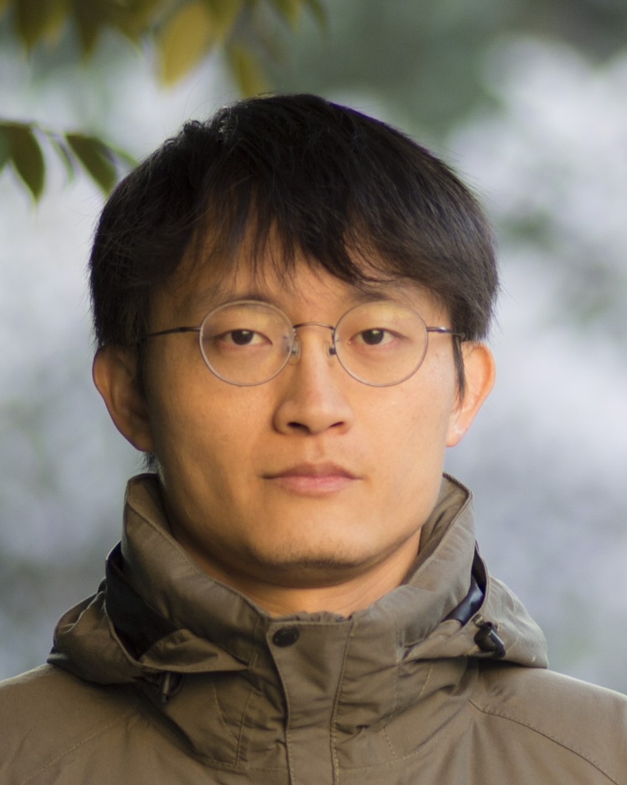
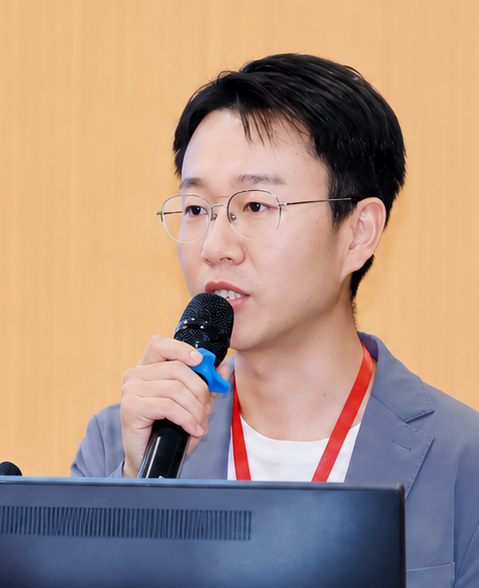
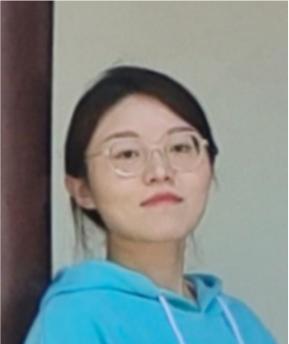
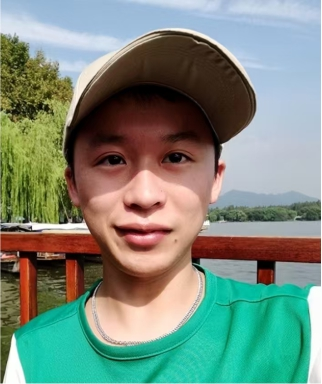
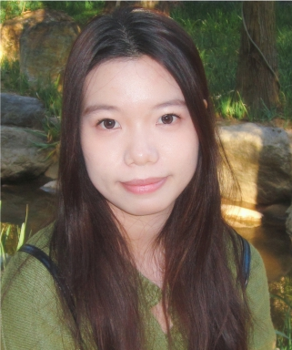
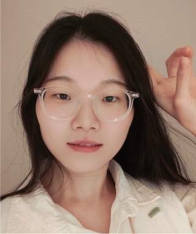
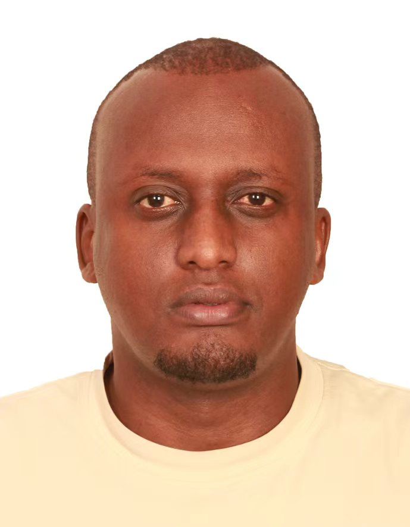
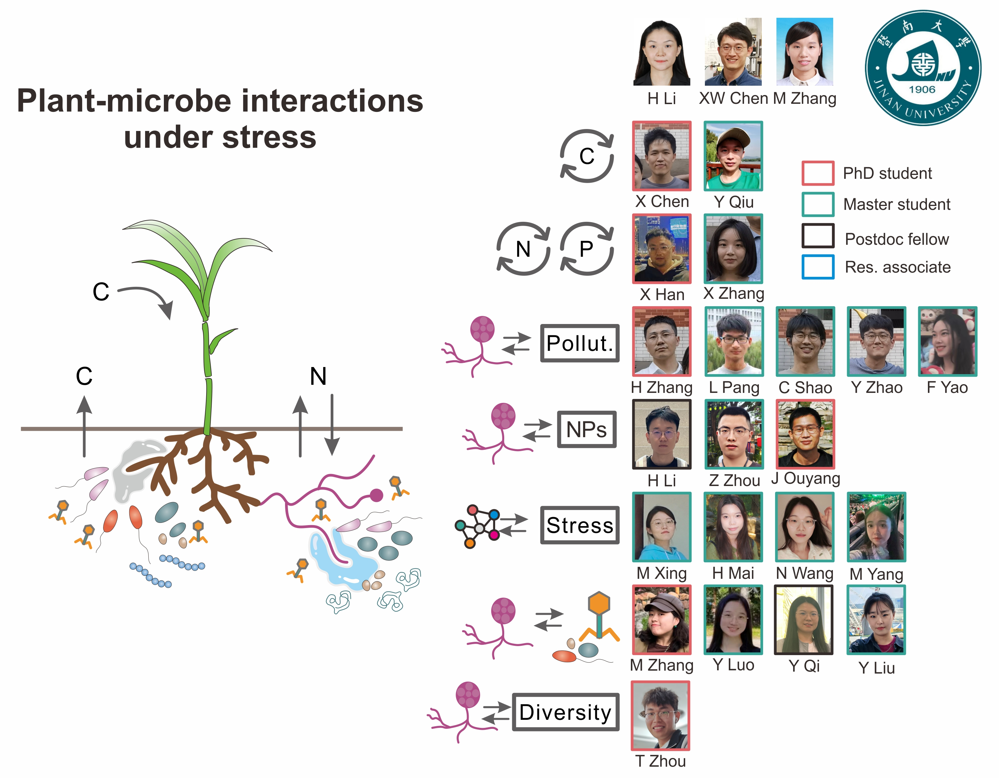

陈勋文博士
小组负责人

李晗灝博士
博士后 (共同指导)
（微生物与新污染物）

邢明歌
硕士生 (共同指导)
（微生物时间序列）

丘逸凡
硕士生
（微生物与碳）

麦慧贞
硕士生
（微生物互作）

王娜娜
硕士生
（群落融合）
姚飞燕
硕士生 (共同指导)
（微生物与砷）

Alexis Kayiranga博士
博士后 (共同指导)
（地下食物网）
- - 崔海 (硕士生, 暨南大学; 土壤氮)
- - 汤晓纯 (硕士生, 暨南大学; 干旱)
- - 殷宁 (博士生 (共同指导), 暨南大学; 噬菌体)
- - 何俊良 (博士生 (共同指导), 暨南大学; 砷)
- - 欧阳建鑫 (博士生 (共同指导), 暨南大学; 土壤氮)
- - 张宇 (硕士生 (共同指导), 暨南大学; 磷)
- - 张鹏飞 (博士生 (共同指导), 暨南大学; 稀疏网络)
以往成员
- - 梁晋玮 (本科, 暨南大学；港中文（深圳）硕士，北大（深圳）科研助理)
- - 李慧珊 (硕士, 南方科技大学；南科大在读博士)
- - 吴家琦 (硕士, 南方科技大学；公司工作)
- - 饶佐民 (硕士, 南方科技大学；公司工作)
- - 闫梦雪 (本科, 南方科技大学；欧洲硕士毕业)
- - 卢航 (科研助理, 南方科技大学；欧洲在读博士)
- - ......
大组成员
